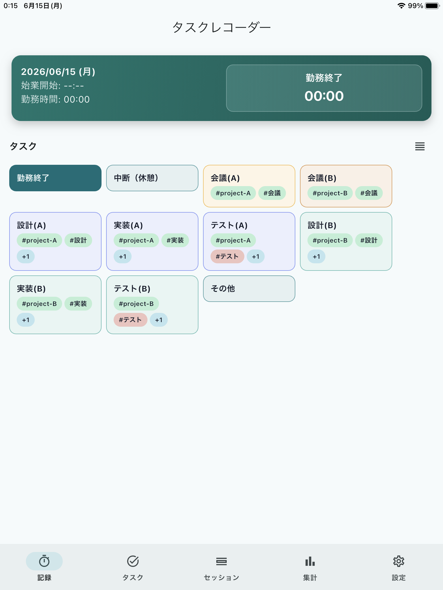

タスクレコーダー

タスクレコーダーは、タスク（作業内容）ごとの勤務時間を簡単に記録・分析するためのアプリです。
作業開始時にタスクを選択し、別の作業を始めるときは新しいタスクをタップするだけで、セッション（作業時間）の開始と終了が記録されます。
主な機能
- ワンタップで作業切替
- セッション（作業時間）の自動記録
- セッション（作業時間）の一覧と修正
- 集計とグラフ表示
- タスク別集計
- ハッシュタグ指定集計
- ハッシュタグ別集計
- バックアップ／復元
- セッションのCSV出力
- オフライン利用対応
ダウンロード
| プラットフォーム | バージョン | ファイル |
|---|---|---|
| Android | v1.0.0+6 | Google Play |
| iOS | v1.0.0+6 | Apple App Store |
| Windows | v1.0.0+7 | TaskRecorder-setup-1.0.0+7.zip |
配布ポリシー
利用者の個人責任の範囲でご利用ください。